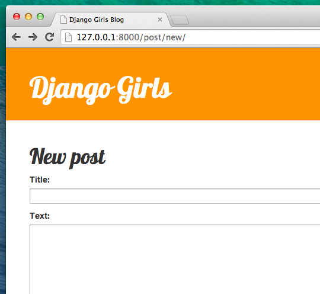
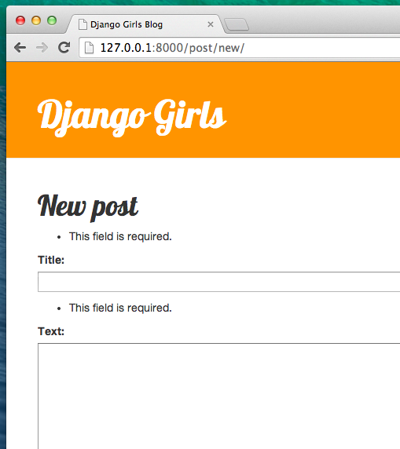

Django Forms
Blogumuzda yapmak istediğimiz son şey blog yazılarını eklemek ve düzenlemek için güzel bir yapı oluşturmak. Django'nun admin arayüzü çok havalı, ama özelleştirilmesi ve güzel hale getirilmesi oldukça zor. forms (formlar) ile kendi arayüzümüz üstünde mutlak bir güce sahip olacağız - neredeyse hayal ettiğimiz her şeyi yapabiliriz!
Django formlarının güzel yanı, hem sıfırdan bir form tanımlayabilmemiz hem de sonuçları modele kaydedecek bir ModelForm oluşturabilmemizdir.
Tam olarak yapmak istediğimiz şey: Post modelimiz için bir form oluşturmak.
Django'nun diğer önemli parçaları gibi, formların da kendi dosyası var: forms.py.
blog dizinimizde bu isimde bir dosya oluşturmalıyız.
blog
└── forms.py
Tamam, hadi dosyayı açalım ve aşağıdaki kodu yazalım:
blog/forms.py
from django import forms
from .models import Post
class PostForm(forms.ModelForm):
class Meta:
model = Post
fields = ('title', 'text',)
Önce Django formları (from django import forms) ve tabii ki Post modelimizi içe aktarmalıyız (from .models import Post).
PostForm, tahmin etmiş olabileceğiniz gibi, formumuzun ismi. Django'ya bu formun bir ModelForm olduğunu belirtmeliyiz. Bunu forms.ModelForm sayesinde Django bizim için yapacaktır.
Sırada Django'ya bu formu (model = Post) oluşturmak için hangi modelin kullanılması gerektiğini anlattığımız class Meta var).
Son olarak, formumuzda hangi alan(lar)ın bulunması gerektiğini söyleyebiliriz. Bu senaryoda sadece title ve text alanlarının gösterilmesini istiyoruz - author şu anda giriş yapmış olması gereken kişidir (yani siz!) ve biz ne zaman yeni bir yazı oluşturursak created_date otomatik olarak (örn. kod içinde) ayarlanmalıdır, değil mi?
Ve hepsi bu kadar! Şimdi tek yapmamız gereken formu bir view içinde kullanıp, template (şablon) içinde göstermek.
Bir kere daha sayfaya bir bağlantı, bir url, bir görünüm ve şablon oluşturacağız.
Formun bulunduğu sayfaya bağlantı oluşturma
Şimdi blog/templates/blog/base.html şablonunu açma zamanı. Öncelikle page-header adlı div öğesinin içine bir bağlantı ekleyeceğiz:
blog/templates/blog/base.html
<a href="{% url 'post_new' %}" class="top-menu"><span class="glyphicon glyphicon-plus"></span></a>
Yeni view'umuzun (görünümüzümün) adını post_new koymak istiyoruz. "glyphicon glyphicon-plus" class'ı kullandığımız bootstrap teması tarafından sağlanıyor ve bizim için bir artı işareti gösterecek.
Satırı ekledikten sonra, HTML dosyanız bu şekilde görünmelidir:
blog/templates/blog/base.html
{% load staticfiles %}
< html>
<head>
<title>Django Girls blog</title>
<link rel="stylesheet" href="//maxcdn.bootstrapcdn.com/bootstrap/3.2.0/css/bootstrap.min.css">
<link rel="stylesheet" href="//maxcdn.bootstrapcdn.com/bootstrap/3.2.0/css/bootstrap-theme.min.css">
<link href='//fonts.googleapis.com/css?family=Lobster&subset=latin,latin-ext' rel='stylesheet' type='text/css'>
<link rel="stylesheet" href="{% static 'css/blog.css' %}">
</head>
<body>
<div class="page-header">
<a href="{% url 'post_new' %}" class="top-menu"><span class="glyphicon glyphicon-plus"></span></a>
<h1><a href="/">Django Girls Blog</a></h1>
</div>
<div class="content container">
<div class="row">
<div class="col-md-8">
{% block content %}
{% endblock %}
</div>
</div>
</div>
</body>
</html>
Dokümanı kaydedip http://127.0.0.1:8000 sayfasını yeniledikten sonra, siz de tanıdık NoReverseMatch hatasını görüyor olmalısınız, değil mi?
URL
blog/urls.py dosyasını açalım ve yeni bir satır ekleyelim:
blog/urls.py
url(r'^post/new/$', views.post_new, name='post_new'),
Ve kodun son hali şu şekilde görünecektir:
blog/urls.py
from django.conf.urls import url
from . import views
urlpatterns = [
url(r'^$', views.post_list, name='post_list'),
url(r'^post/(?P<pk>\d+)/$', views.post_detail, name='post_detail'),
url(r'^post/new/$', views.post_new, name='post_new'),
]
Siteyi yeniledikten sonra, bir AttributeError görürüz, çünkü uygulanan post_new görünümüne sahip değiliz. Hemen şimdi ekleyelim.
post_new view
Şimdi blog/views.py dosyasını açıp aşağıdaki satırları diğer from satırlarının olduğu yere ekleyelim:
blog/views.py
from .forms import PostForm
Ve sonra bizim view'imiz:
blog/views.py
def post_new(request):
form = PostForm()
return render(request, 'blog/post_edit.html', {'form': form})
Yeni bir Post formu oluşturmak için PostForm() fonksiyonunu çağırmak ve template'e iletmek gerekir. view kısmına geri döneceğiz, ancak şimdilik form için bir şablon oluşturalım.
Template
Öncelikle blog/templates/blog dizininde post_edit.html isimli bir dosya oluşturmalıyız. Bir formu çalışır hale getirmek için birkaç şeye ihtiyacımız var:
- Formu göstermek zorundayız. Örneğin bunu şu şekilde yapabiliriz
{{ form.as_p }}. - Yukarıdaki örnek satır HTML form etiketi içine alınmalı:
<form method="POST">...</form>. - Bir
Kaydetbutonuna ihtiyacımız var. Bunu Bir HTML butonu ile yapıyoruz:<button type="submit">Kaydet</button>. - Ve son olarak, açılıştan hemen sonra
<form ...>etiketini eklememiz gerekiyor{% csrf_token %}. Formlarımızın güvenliğini sağladığı için bu çok önemlidir! Eğer bu kısmı unutursan, formu kaydetmeye çalıştığınızda Django şikayet edecektir:

Tamam,hadi post_edit.html deki HTML'ye nasıl bakılacağını görelim:
blog/templates/blog/post_edit.html
{% extends 'blog/base.html' %}
{% block content %}
<h1>New post</h1>
<form method="POST" class="post-form">{% csrf_token %}
{{ form.as_p }}
<button type="submit" class="save btn btn-default">Save</button>
</form>
{% endblock %}
Yenileme zamanı! Hey! Formun görüntülendi!

Ama, bekle bir dakika! başlık ve başlık alanlarına bir şey yazdığında ve kaydetmeye çalıştığında, ne olacak?
Hiçbirşey! Bir kere daha aynı sayfadayız, metnimiz gitmiş ve yeni gönderi eklenmemiş. Peki ne yanlış gitti?
Yanıt: hiçbir şey. Sadece view'ımızda biraz daha iş yapmamız gerekiyor.
Formu kaydetme
Bir kez daha blog/views.py yi açın.Halihazırda post_new görüntüsündeki elimizdeki bütün şey şunlardır:
blog/views.py
def post_new(request):
form = PostForm()
return render(request, 'blog/post_edit.html', {'form': form})
Formu teslim ettiğinizde, aynı görüşe yönlendirileceğiz, bu sefer request içinde daha fazla bilgi olacak, özellikle request.POST içinde ( isimlendirmenin blog gönderisiyle bir bağlantısı yoktur; daha fazla veri göndermemizle ilgilidir). HTML dosyasının <form> açıklamasının method="POST" değişken varlığını hatırlıyormusunuz? Formdan gelen tüm alanlar şimdi request.POST'un içerisinde. POST'un ismini değiştirmememiz lazım (method için geçerli diğer değer sadece GET'dir, ama şimdi ikisi arasındaki farkın ne olduğunu anlatacak kadar vaktimiz yok).
view içinde halletmemiz gereken iki ayrı durum vardır: öncelikle, sayfaya ilk kez eriştiğimizde ve boş bir form isteğimizde, ikincide view girdiğimiz form verisiyle geri gideriz. Yani bir koşul eklememiz gerekiyor (bunun için if kullanacağız):
blog/views.py
if request.method == "POST":
[...]
else:
form = PostForm()
Noktaları doldurma zamanı [...]. Eğer method POST ise PostForm formdaki veriyle oluşturmalıyız, değil mi? Bunu şu şekilde yapacağız:
blog/views.py
form = PostForm(request.POST)
Bir sonraki işimiz formun doğru olup olmadığını kontrol etmek (tüm gerekli alanlar ayarlanmış ve yanlış değer verilmediyse). Bunu şu şekilde yaparız form.is_valid().
Formun doğruluğunu kontrol ediyoruz ve doğru ise kaydedebiliriz!
blog/views.py
if form.is_valid():
post = form.save(commit=False)
post.author = request.user
post.published_date = timezone.now()
post.save()
Temel olarak, burada iki şey yaptık: formu form.save ile kaydettik ve bir yazar ekledik (PostForm'da bir yazar tanımlı olmadığı ve bu zorunlu bir alan olduğu için). commit=False; e Post modelini kaydetmek istemiyoruz demektir - öncelikle yazarı eklemeliyiz. Çoğu zaman form.save() kullanırken, commit=False kullanılmayacaktır, bu durumda desteklemeliyiz. post.save() değişiklikleri saklar (yazar ekleme) ve yeni blog yazısı oluşturulur!
Son olarak hızlı bir şekilde yeni oluşturulmuş blog gönderimiz için post_detail gidebilirsek harika olurdu değil mi? Bunu yapmak için bir tane daha içe yapmamız gerekli:
blog/views.py
from django.shortcuts import redirect
Dosyanızın başlangıcına ekleyin. Şimdi "yeni oluşturulmuş gönderi için post_detail gidin" diyebiliriz:
blog/views.py
return redirect('post_detail', pk=post.pk)
post_detail, gitmek istediğimiz view'un (görünümün) adı. Unutmayalım ki bu view için bir pk değişkeni lazım. Bu görüntülere geçmek için pk=post.pk kullanırız,burada post yeni oluşturulan blog yazısıdır!
Tamam, çok fazla konuştuk, ama muhtemelen bütün görüntü neye benziyor görmek istiyoruz değil mi?
blog/views.py
def post_new(request):
if request.method == "POST":
form = PostForm(request.POST)
if form.is_valid():
post = form.save(commit=False)
post.author = request.user
post.published_date = timezone.now()
post.save()
return redirect('post_detail', pk=post.pk)
else:
form = PostForm()
return render(request, 'blog/post_edit.html', {'form': form})
Bakalım çalışacak mı? http://127.0.0.1:8000/post/new/ sayfasına gidin, bir başlık vemetin ekleyin, kaydedin... ve işte oldu! Yeni blog gönderisi eklenmiştir ve post_detail sayfasına yönlendirildik!
Gönderiyi kaydetmeden önce yayınlama tarihini ayarladığımızın farkına varabilirsiniz. Daha sonra yayınlama butonu Django Girls Tutorial: Uzantılar içinde tanıtacağız.
Süper!
Son zamanlarda Django yönetici ara yüzünü kullandığımız için sistem halihazırda hala giriş yaptığımızı düşünüyor. Oturumu kapatmamıza yol açabilen birkaç durum vardır(tarayıcıyı kapama, DB'yi yeniden başlatma ve benzeri). Eğer,bir post oluştururken,oturum açan bir kullanıcının yoksunluğuna istinaden hatalar aldığınıza rastlıyorsanız yönetici sayfasına http://127.0.0.1:8000/admin yönelin ve tekrardan giriş yapın. Bu durumu geçici de olsa da halleder. Kalıcı çözüm, ana tutorialdan sonra Ödev: Web sitene güvenlik ekleme! bölümünde anlatılacak.

Form doğrulama
Şimdi de Django formlarının ne kadar havalı olduğunu görelim. Bir blog postunun baslik ve yazi alanları olmalı. Post modelimizde bu alanların( published_date e karşı olarak) gerekli olmadığını söylemedik, bu yüzden Django varsayılan olarak hazır olmasını bekler.
Formu başlık ve metin olmadan kaydetmeyi deneyin. Tahmin edin ne olacak!

Django formumuzdaki tüm alanların doğru olduğunu onaylamaya dikkat ediyor. Müthiş değil mi?
Form düzenleme
Artık yeni bir form oluşturmayı biliyoruz. Peki, mevcut bir formu güncellemek için ne yapmalı? Bu az önce yaptığımız şeyle çok benzer. Hızlıca bazı önemli şeyleri oluşturalım. (Eğer birşeyi anlamazsan, çalıştırıcına sormalısın veya önceki bölümlere bakmalısın, çünkü bütün bu adımları daha önce bitirdik.)
blog/templates/blog/post_detail.html açın ve satırı ekleyin
blog/templates/blog/post_detail.html
<a class="btn btn-default" href="{% url 'post_edit' pk=post.pk %}"><span class="glyphicon glyphicon-pencil"></span></a>
böylece şablon bunun gibi görünecektir:
blog/templates/blog/post_detail.html
{% extends 'blog/base.html' %}
{% block content %}
<div class="post">
{% if post.published_date %}
<div class="date">
{{ post.published_date }}
</div>
{% endif %}
<a class="btn btn-default" href="{% url 'post_edit' pk=post.pk %}"><span class="glyphicon glyphicon-pencil"></span></a>
<h1>{{ post.title }}</h1>
<p>{{ post.text|linebreaksbr }}</p>
</div>
{% endblock %}
blog/urls.py dosyasına şu satırı ekleyelim:
blog/urls.py
url(r'^post/(?P<pk>\d+)/edit/$', views.post_edit, name='post_edit'),
Daha önce kullandığımız blog/templates/blog/post_edit.html template'i tekrar kullanacağız, tek eksik bir view.
blog/views.py açın ve dosyanın en sonuna bunu ekleyin:
blog/views.py
def post_edit(request, pk):
post = get_object_or_404(Post, pk=pk)
if request.method == "POST":
form = PostForm(request.POST, instance=post)
if form.is_valid():
post = form.save(commit=False)
post.author = request.user
post.published_date = timezone.now()
post.save()
return redirect('post_detail', pk=post.pk)
else:
form = PostForm(instance=post)
return render(request, 'blog/post_edit.html', {'form': form})
Bu nerdeyse bizim post_new view'e benziyor, değil mi? Ama, tam da değil. Özellikle url'lerden ekstra bir pk parametresi geçiriyoruz. Sonra,get_object_or_404(Post, pk=pk) düzenlemek istediğimiz Post modelini alıyoruz ve daha sonra bir form oluşturduğumzda bu yazıyı instance olarak geçiriyoruz, formu kaydettiğimizde de…
blog/views.py
form = PostForm(request.POST, instance=post)
…ve düzenlemek için bu post ile ilgili bir form açtığımızda:
blog/views.py
form = PostForm(instance=post)
Tamam, çalışıp çalışmadığını test edelim! post_detail sayfasına gidelim. Sağ üst köşede bir düzenleme butonu olmalıdır:

Butona tıklarsak blog postunu görmemiz lazım:

Başlık ya da metni değiştirmekten ve değişiklikleri kaydetmekten çekinmeyin!
Tebrikler! Uygulaman gittikçe tamamlanıyor!
Eğer Django formlarıyla ilgili daha çok bilgiye ihtiyacın varsa,belgelendirmeyi okumalısın: https://docs.djangoproject.com/en/1.11/topics/forms/
Güvenlik
Bir bağlantıya (link) tıklayarak yeni bir blog oluşturabilmek harika! Ama şu anda sizin sitenizi ziyaret eden herkes yeni bir blog post yapabilecek ve bu muhtemelen isteyeceğiniz bir şey değil. Butonun sadece sana görünmesini sağlayalım.
blog/templates/blog/base.html dosyasında yarattığımız page-header div ve anchor etiketlerini (tags) bulalım. Şuna benziyor olmalı:
blog/templates/blog/base.html
<a href="{% url 'post_new' %}" class="top-menu"><span class="glyphicon glyphicon-plus"></span></a>
Linkin sadece admin olarak giriş yapmış kullanıcılara gözükmesi için başka bir {% if %} etiketi ekleyeceğiz. Şu anda bu kişi sensin! <a> etiketini şöyle değiştirelim:
blog/templates/blog/base.html
{% if user.is_authenticated %}
<a href="{% url 'post_new' %}" class="top-menu"><span class="glyphicon glyphicon-plus"></span></a>
{% endif %}
Bu {% if %} bağlantının sadece eğer sayfayı talep eden kullanıcı oturum açtıysa tarayıcıya gönderilmesine sebep olacak. Bu yeni post yaratılmasını kesin olarak engellemese de iyi bir başlangıç. Güvenlik konusu ek derslerde daha çok ele alınacak.
Az evvel detay sayfamıza eklediğimiz düzenle ikonunu hatırladınız mı? Aynı değişikliği oraya da eklemek istiyoruz. Böylelikle başka insanlar var olan gönderileri düzenleyemeyecekler.
blog/templates/blog/post_detail.html açın ve bu satırı bulun:
blog/templates/blog/post_detail.html
<a class="btn btn-default" href="{% url 'post_edit' pk=post.pk %}"><span class="glyphicon glyphicon-pencil"></span></a>
Buna çevirin:
blog/templates/blog/post_detail.html
{% if user.is_authenticated %}
<a class="btn btn-default" href="{% url 'post_edit' pk=post.pk %}"><span class="glyphicon glyphicon-pencil"></span></a>
{% endif %}
Yüksek olasılıkla login yapmış olduğunuz için sayfayı yenilediğinizde farklı bir şey göremeyeceksiniz. Sayfayı farklı bir tarayıcı veya görünmez pencere ile yükleyin(Windows Edge üzerinde "InPrivate" olarak adlandırılan), yinede göreceksiniz ki bağlantı ve ikon gözükmeyecektir!
Bir şey daha: deployment (yayına alma) zamanı!
Bakalım PythonAnywhere'de calışacak mı? Tekrar yayına alalım!
- İlk önce kodumuzu commit edelim, sonra Github'a push edelim:
komut-satırı
$ git status
$ git add --all .
$ git status
$ git commit -m "Sitede gönderi oluşturmak ve düzenlemek için view'ler eklendi."
$ git push
- Sonra bir PythonAnywhere Bash konsol una gidip:
komut-satırı
$ cd ~/<your-pythonanywhere-username>.pythonanywhere.com
$ git pull
[...]
(Açı parantezleri olmadan <your-pythonanywhere-username>'i gerçek PythonAnywhere kullanıcı isminizle değiştirmeyi unutmayın).
- Nihayet, Web tab ına gidip Reload edelim.
İşte bu kadar! Tebrikler :)